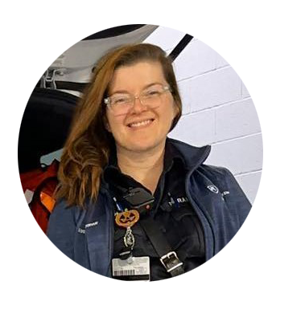

Kara Kitchen works as a paramedic...
currently stationed with a county outfit near York, PA. However, previous deployments are where she earned the moniker "The Little Medic," where this site gets its name. Kara initially started out working in retail, which supported her financially as she went through the necessary schooling to become a paramedic.
She has come a very long way since her retail beginnings, and she greatly enjoys her current career standings where she also works to train future paramedics, in addition to her regular duties. When Kara is not on shift, she can be found either up to her eyebrows in fabric and thread, creating sartorial wonders, or up to her elbows in dough for her latest baking adventure. Currently, she is mastering the art of baking bread.
Kara lives in Pennsylvania, with her husband Tom, and her two spoiled-silly dogs, Riker and Lily.
